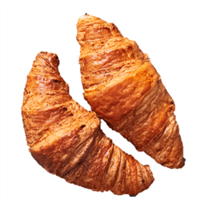
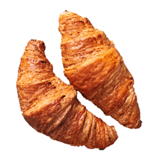

Kruasanas su kiaulienos kumpeliu - Atrask Skonį
2020.10.29 10:59

Užkandžiai Užkandžių rinkiniai Užkandžiai vienetais Šaldyti produktai Desertai Paslaugos Išvežamosios ceremonijos Šampano staliukas Apie mus Kontaktai Gauti pasiūlymą Pasiūlymas Įmonių Vakarėliams Prisijungti / Registruotis 0 Pradinis Užkandžiai Užkandžiai vienetais Kruasanas su kiaulienos kumpeliu
Kruasanas su kiaulienos kumpeliu
Kruasanas su kiaulienos kumpeliu
Ingredientai
kiaulienos kumpelis , kruasanas , raudonas svogūnas , rukola , užtepėlė1,00 €
Keturių kąsnių užkandis Mažiausias užsakymo kiekis 20 vnt. Nuotraukoje pateiktas gaminys yra pavyzdinis Informacija apie alergenus Informaciją apie gaminiuose esančias alergiją ir netoleravimą sukeliančias medžiagas galima gauti pasiteiravus.Jums taip pat gali patikti…
TopMini mėsainiai su vištienos file maltinuku
1,30 € Į krepšelįKruasanas su rūkyta lašiša
1,00 € Į krepšelį Be mėsosKruasanas su mocarela su bruknių uogiene
1,00 € Į krepšelįMaži kibinai su kiauliena
1,00 € Į krepšelįRekvizitai
MB “Atrask skonį”
+37062018165
info@atraskskoni.lt
Įmonės kodas: 304476576
Adresas: Linkuvos g. 58, LT-48357, Kaunas
Informacija
Informacija apie alergenus Slapukai Privatumo politikaKlientams
Paskyra Paslaugos KontaktaiSekite mus
2020 © MB Atrask skonį Įm. k. 304476576 Pradinis Užkandžiai Užkandžių rinkiniai Užkandžiai vienetais Šaldyti produktai Desertai Paslaugos Išvežamosios ceremonijos Šampano staliukas Apie mus Kontaktai Gauti pasiūlymą Pasiūlymas Įmonių Vakarėliams Informuojame, kad šioje svetainėje naudojami slapukai (angl. cookies). Sutikdami, paspauskite mygtuką „Sutinku“ arba naršykite toliau. Savo duotą sutikimą bet kada galėsite atšaukti pakeisdami savo interneto naršyklės nustatymus ir ištrindami įrašytus slapukus. Sutinku- MANTINGA | Produktai
- Naminiai kruasanai - DELFI Gyvenimas
- Sviestiniai rageliai (kruasanai) paprasčiau | NUOTRAUKOS ...
- Ar vartotinas žodis „kruasanas“? - VLKK
- Kruasanai - Saldu Saldu
- kruasanas Archives - Atrask Skonį
- Kruasanas su kiaulienos kumpeliu - Atrask Skonį
- Kruasanas - Crustum
- Kruasanai su šokoladu (iš šaldytos sluoksniuotos bemielės ...
- Jo didenybė kruasanas: prancūzų numylėtinis, pavergęs ir ...
- MANTINGA | Produktai
Šiandieną gaminame traškius sluoksniuotos tešlos sviestinius pyragėlius - kruasanus. Tešlą gaminsime patys, todėl nedelsdami pradėkime!
- Naminiai kruasanai - DELFI Gyvenimas
Taip, vartotinas. Kruasanas (pranc.croissant), prancūziškas ragelis (Tarptautinių žodžių žodynas, Vilnius, 2013, p. 458).„Kalbos patarimuose. Kn. 4: Leksika ...
- Sviestiniai rageliai (kruasanai) paprasčiau | NUOTRAUKOS ...
Kaip ir sakiau – kruasanas, puodelis kavos, stiklainėlis mėgstamo džemo, gal dar mylima muzika ar netikėti saulės spinduliai už lango – ir tai bus skanios akimirkos, kurias dar ilgai norėsis nešiotis širdy. Nes maži dalykai yra dideli dalykai, nes skanios akimirkos kuria istorijas, nes naminiai kepiniai visada yra patys ...
- Ar vartotinas žodis „kruasanas“? - VLKK
„Šviežias kruasanas turi traškėti, o viduje turi matytis daugybė plonų sluoksnių. Ką tik iškeptas ir dar šiltas kruasanas yra nuostabaus skonio. Jame visuomet jausite lengvą sviesto skonį, jis bus purus, minkštas ir žavės savo meistriška sluoksnių struktūra“, – dalijosi ji.
- Kruasanai - Saldu Saldu
Virimo kruasanas su sūriu: 1 žingsnis: kepkite tešlą. Pirmiausia reikia paruošti mieles, kurios bus kruasanų testo pagrindas. Paimkite 50 ml anksčiau virinto ir atvėsinto vandens. Supilkite skystį į gilią plokštelę ir įpilkite į jį šaukštelį granuliuoto cukraus ir mielių. Palikite juos 10–15 minučių kambario temperatūroje.
- kruasanas Archives - Atrask Skonį
DELFI - Lengvi ir gardūs – tarsi mylimojo bučinys – prancūziški raguoliai gana paprastai pagaminami ir namuose. Ir visai nereikia kas kartą jų užsimanius vykti į Prancūziją.
- Kruasanas su kiaulienos kumpeliu - Atrask Skonį
Kruasanas su mocarela 2,6 € / vnt. Kruasanas su rūkyta lašiša 2,4 € / vnt. Meniu Desertai Užkandžiai Galerija. Paslaugos Individualūs užsakymai Pristatymas Įrankių, indų nuoma. Saldu Saldu Apie mus Dažniausiai užduodami klausimai Idėjos. Susisiekite Tel. +370 (605) 60 115
- Kruasanas - Crustum
Kruasanas su karamele ir riešutais – atitinka naujus, sugriežtintus mokinių maitinimui keliamus reikalavimus Karamelė – niekad neatsibostanti klasika, ji lyg klasikos ikona, kurios skoniui atsispirti gali tik vienetai, ne veltui, tai vienas
- Kruasanai su šokoladu (iš šaldytos sluoksniuotos bemielės ...
Kruasanai | Video receptas - patiekalas, kurį nesunkiai pasigaminsite pagal šį receptą. Daug gerų, išbandytų receptų, kuriuos privalai išmėginti!
- Jo didenybė kruasanas: prancūzų numylėtinis, pavergęs ir ...
Kruasanas. 2,00 € su uogiene ir sviestu . PRADŽIAI. Marinuotos alyvuogės. 4,50 € Sezoninė sriuba. 4,00 € Matje silkė su švediška bulve, varškės ir burokėlių kremu. 7,50 € Ispaniškos menkės ir bulvių spurgytės. 5,90 € su sepijų rašalu ir ajoli majonezu .
Šiandieną gaminame traškius sluoksniuotos tešlos sviestinius pyragėlius - kruasanus. Tešlą gaminsime patys, todėl nedelsdami pradėkime!
Taip, vartotinas. Kruasanas (pranc.croissant), prancūziškas ragelis (Tarptautinių žodžių žodynas, Vilnius, 2013, p. 458).„Kalbos patarimuose. Kn. 4: Leksika ...
Kaip ir sakiau – kruasanas, puodelis kavos, stiklainėlis mėgstamo džemo, gal dar mylima muzika ar netikėti saulės spinduliai už lango – ir tai bus skanios akimirkos, kurias dar ilgai norėsis nešiotis širdy. Nes maži dalykai yra dideli dalykai, nes skanios akimirkos kuria istorijas, nes naminiai kepiniai visada yra patys ...
„Šviežias kruasanas turi traškėti, o viduje turi matytis daugybė plonų sluoksnių. Ką tik iškeptas ir dar šiltas kruasanas yra nuostabaus skonio. Jame visuomet jausite lengvą sviesto skonį, jis bus purus, minkštas ir žavės savo meistriška sluoksnių struktūra“, – dalijosi ji.
Virimo kruasanas su sūriu: 1 žingsnis: kepkite tešlą. Pirmiausia reikia paruošti mieles, kurios bus kruasanų testo pagrindas. Paimkite 50 ml anksčiau virinto ir atvėsinto vandens. Supilkite skystį į gilią plokštelę ir įpilkite į jį šaukštelį granuliuoto cukraus ir mielių. Palikite juos 10–15 minučių kambario temperatūroje.
DELFI - Lengvi ir gardūs – tarsi mylimojo bučinys – prancūziški raguoliai gana paprastai pagaminami ir namuose. Ir visai nereikia kas kartą jų užsimanius vykti į Prancūziją.
Kruasanas su mocarela 2,6 € / vnt. Kruasanas su rūkyta lašiša 2,4 € / vnt. Meniu Desertai Užkandžiai Galerija. Paslaugos Individualūs užsakymai Pristatymas Įrankių, indų nuoma. Saldu Saldu Apie mus Dažniausiai užduodami klausimai Idėjos. Susisiekite Tel. +370 (605) 60 115
Kruasanas su karamele ir riešutais – atitinka naujus, sugriežtintus mokinių maitinimui keliamus reikalavimus Karamelė – niekad neatsibostanti klasika, ji lyg klasikos ikona, kurios skoniui atsispirti gali tik vienetai, ne veltui, tai vienas
Kruasanai | Video receptas - patiekalas, kurį nesunkiai pasigaminsite pagal šį receptą. Daug gerų, išbandytų receptų, kuriuos privalai išmėginti!
Kruasanas. 2,00 € su uogiene ir sviestu . PRADŽIAI. Marinuotos alyvuogės. 4,50 € Sezoninė sriuba. 4,00 € Matje silkė su švediška bulve, varškės ir burokėlių kremu. 7,50 € Ispaniškos menkės ir bulvių spurgytės. 5,90 € su sepijų rašalu ir ajoli majonezu .

 
